2024-01
2024-01-01.05-30.wahrsager-sind-staatsfeinde.staaten-bauen-auf-lügen.webp
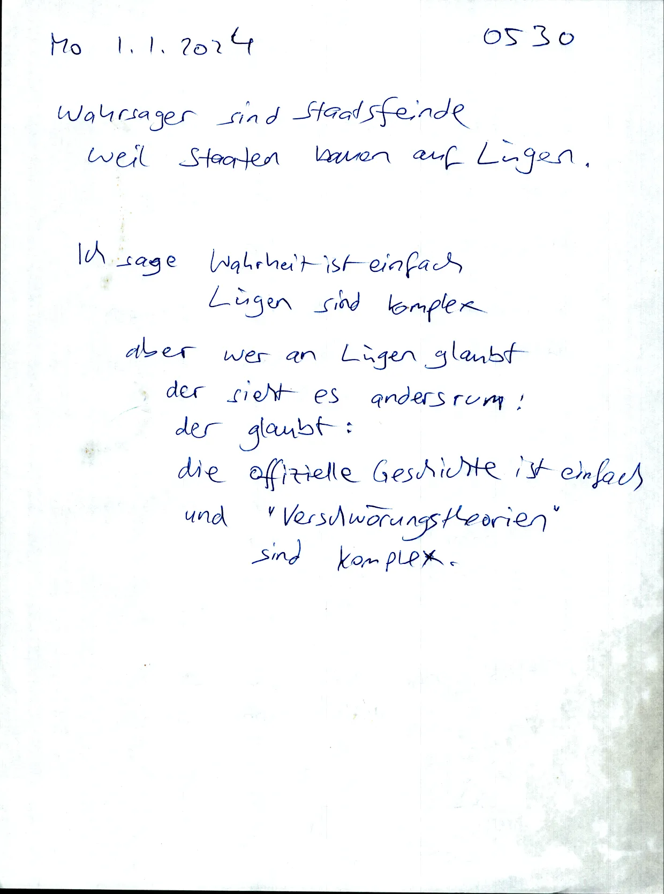
2024-01-01.05-40.nostr-is-shit.controlled-opposition.sabotage.information-overload.too-much-information.webp
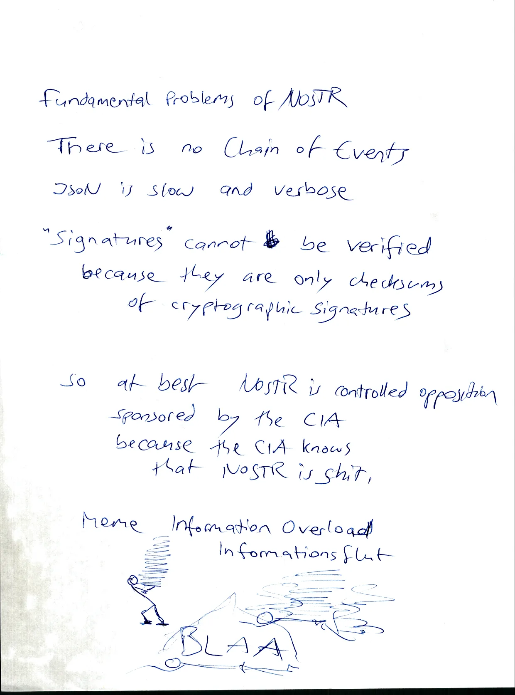
2024-01-01.22-00.einseitigkeit-gerechtigkeit.webp
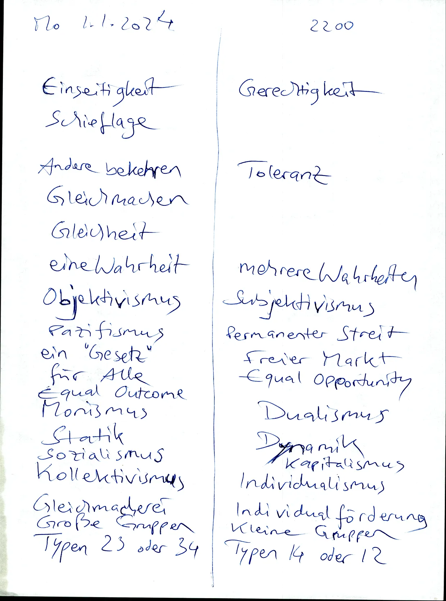
2024-01-01.22-10.chaoten-sind-besser-organisiert.kompensation.kunstordnung.webp
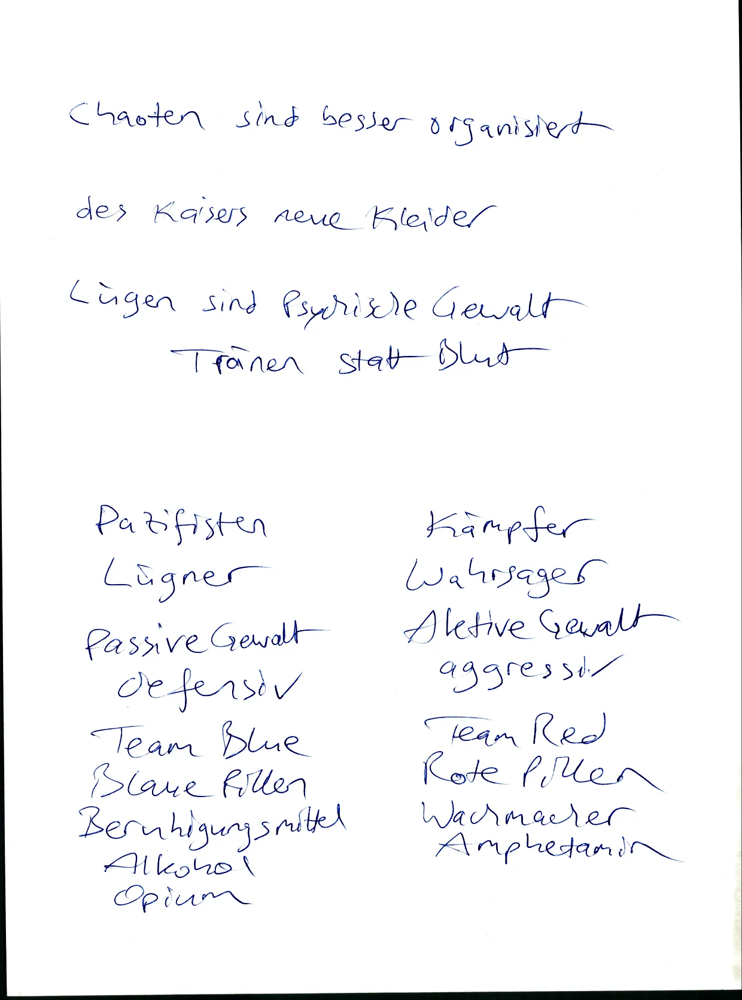
2024-01-02.05-00.natural-cancer-cures.observe-animals-eating-herbs.dumme-menschen-sagen-tiere-sind-dumm.webp
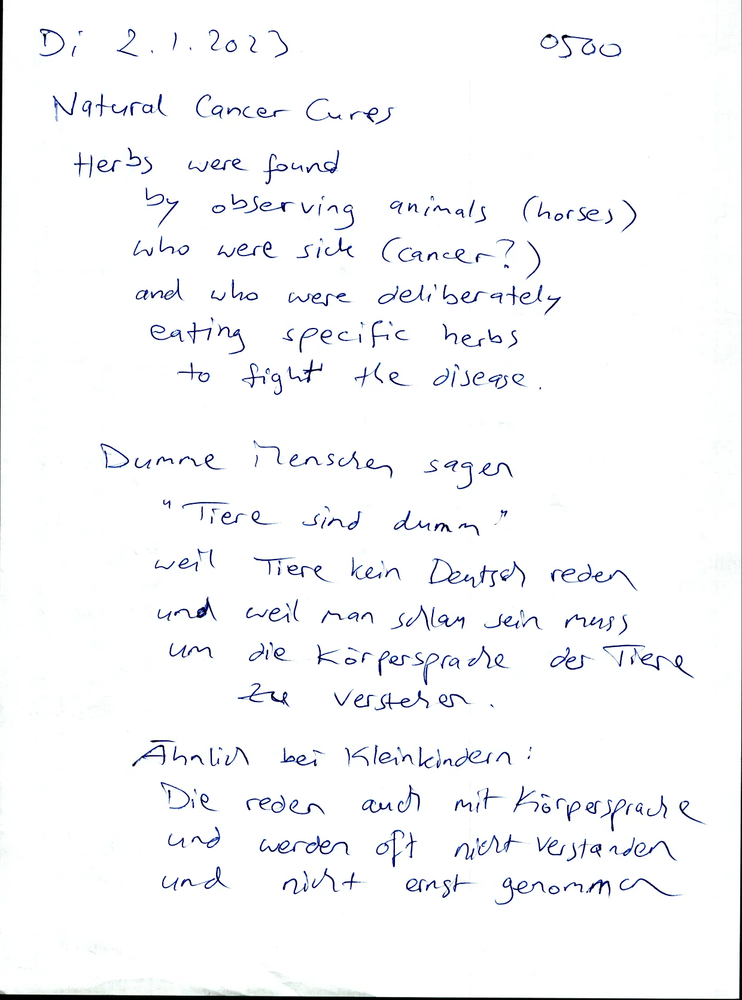
2024-01-02.05-10.placenta.muttermilch.kind.immunschwäche.webp
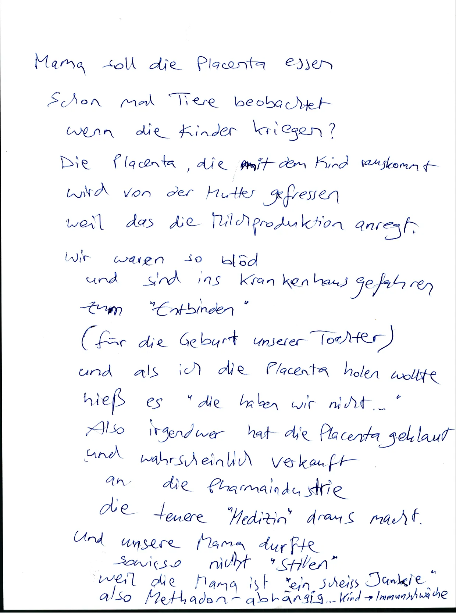
2024-01-02.05-30.mit-idioten-über-schlauheit-reden.mit-blinden-über-farben-streiten.webp
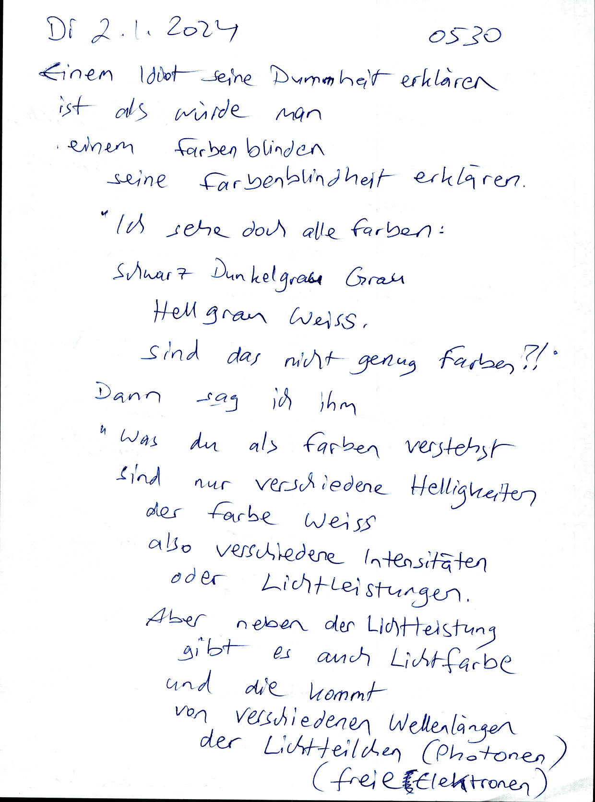
2024-01-02.05-40.freier-markt.wahre-lebenskosten.bevölkerung.inflation.wachstum.recht-auf-leben.webp
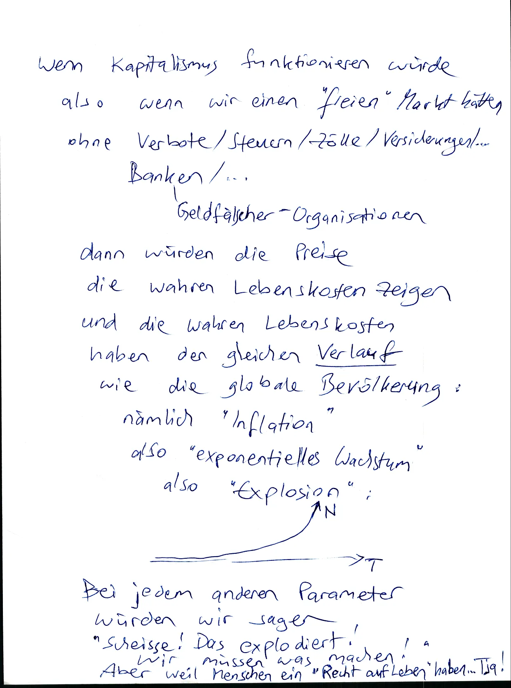
2024-01-02.06-00.kein-aufruf.was-würde-ich-machen.andere-menschen-egal.sowieso-idioten.betrug.bioscan.webp
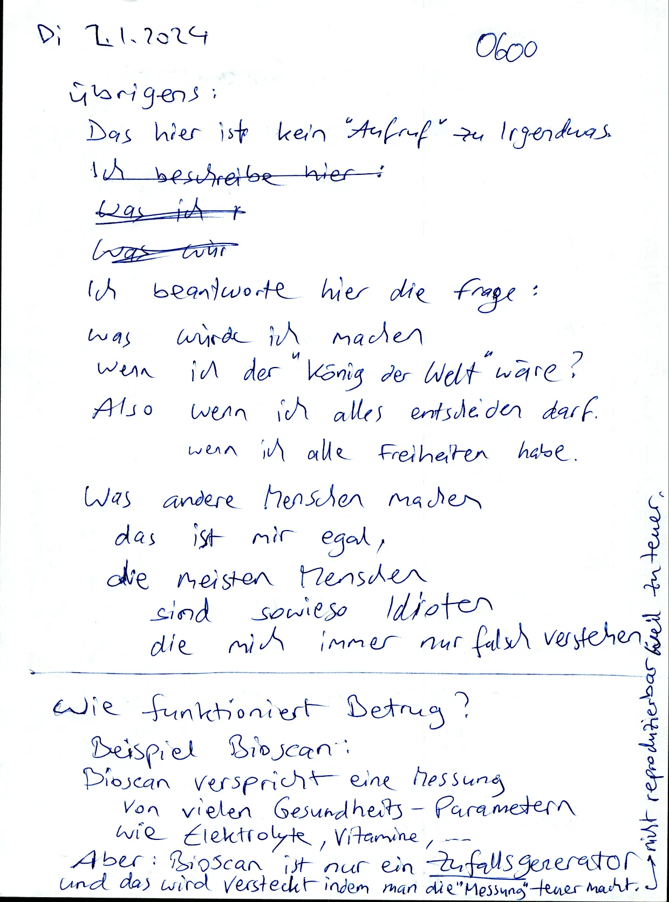
2024-01-02.06-10.farben.grün-rot-blau.hauptwort-nebenwort.aussen-innen.webp
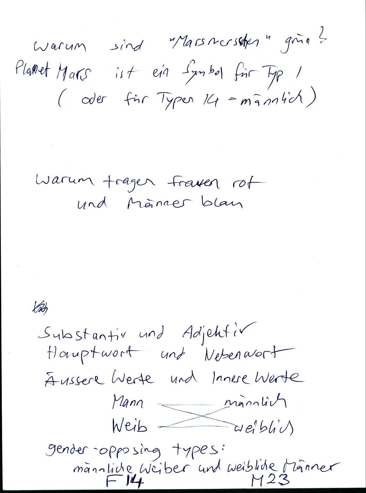
2024-01-02.06-30.global-warming.global-cooling.schwächen-und-stärken-sind-subjektiv-und-reziprok.webp
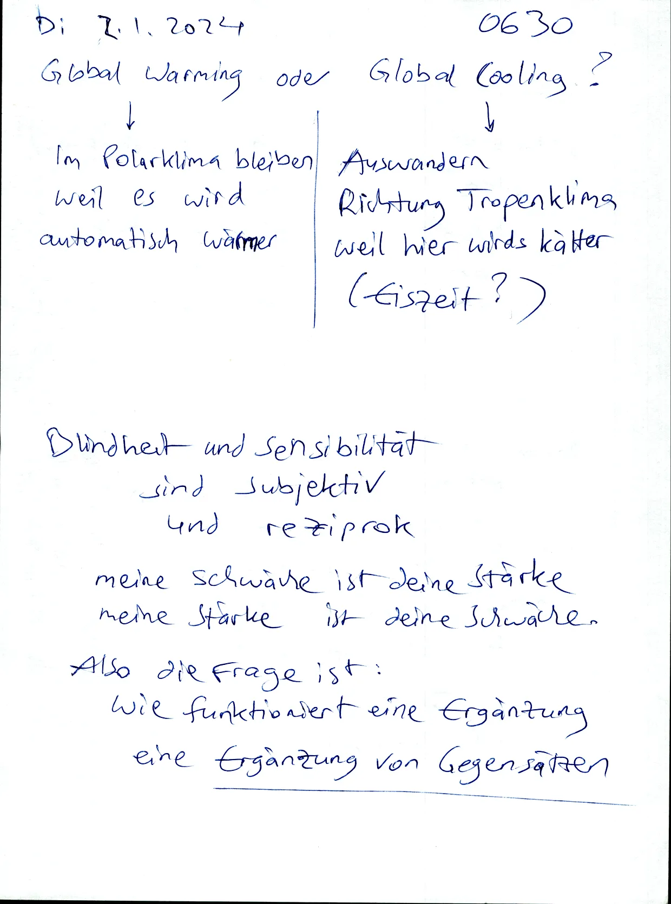
2024-01-02.06-40.stärke-schwäche.gegentypen.webp
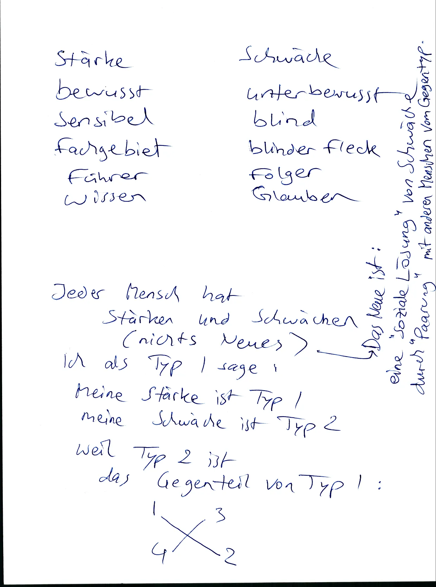
2024-01-02.11-30.große-probleme.zu-weit-weg.passivität.sich-schlau-fühlen.webp
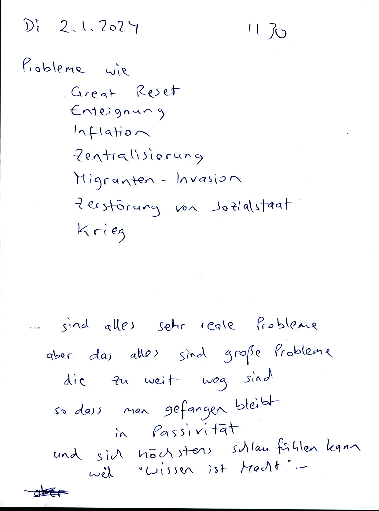
2024-01-02.11-40.kleine-probleme.aktiv-werden.lösbare-probleme.bottom-up.webp
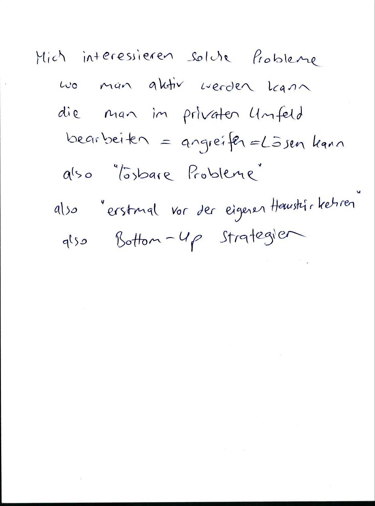